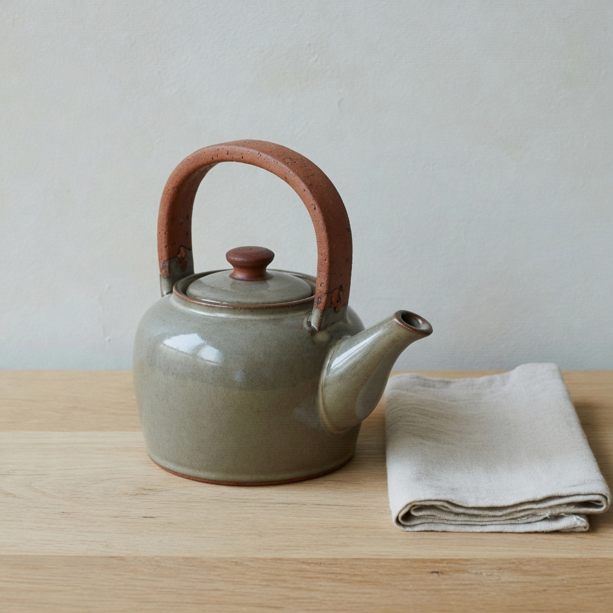

obs_0199
anchor_object · medium
Prompt
Preserve the same subject, identity, pose, framing, crop, camera position, and key-light direction. Do not change wardrobe, props, or scene content. Do not restyle the picture into a period look, a movie still, or a genre. Change only analog video texture. Set analog video texture to: mild analog video texture, faint scan-like grain, slight chroma crawl, keep subject edges. Change only analog video texture. Do not add extra optical softness or diffusion. Do not add a CRT bezel, letterbox, or tracking-error bars. Do not change lighting, time of day, or restyle into a decade or genre. Do not add photochemical grain clumps.
Scores
| vector | score | conf |
|---|---|---|
| vec_telecine_softness | 0.16 | 0.55 |
| vec_analog_video_texture | 0.40 | 0.76 |
| vec_optical_softness | 0.16 | 0.58 |
| vec_vhs_bandwidth_loss | 0.08 | 0.50 |
| vec_fine_detail_rolloff | 0.20 | 0.45 |
| vec_grain_structure | 0.19 | 0.50 |
| vec_diffusion | 0.08 | 0.40 |
| vec_edge_softness | 0.16 | 0.40 |
| vec_microcontrast | 0.60 | 0.40 |
| vec_halation | 0.06 | 0.35 |
| vec_highlight_bloom | 0.08 | 0.35 |
Unintended
- none
Intended analog video texture medium.